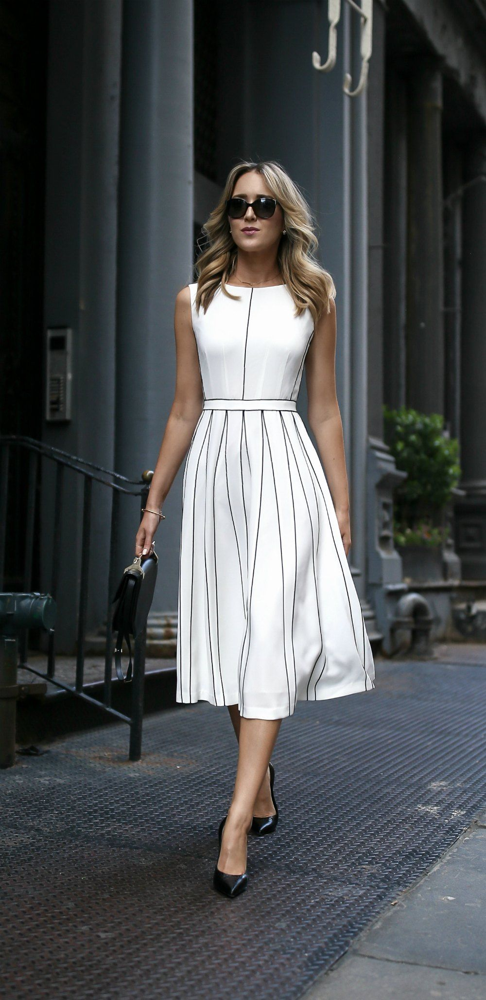
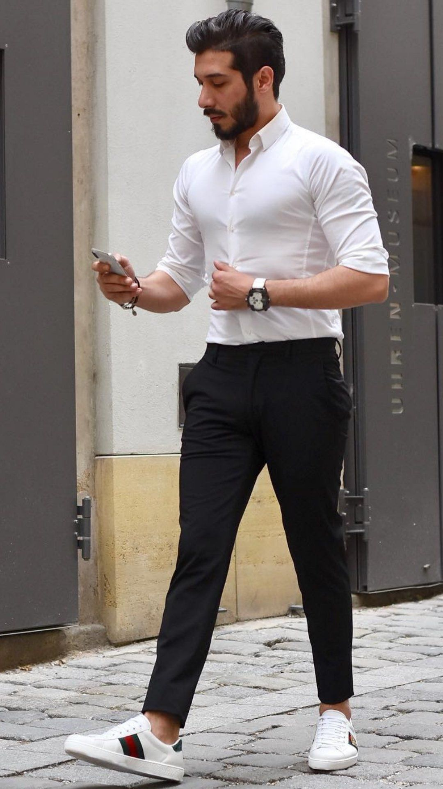
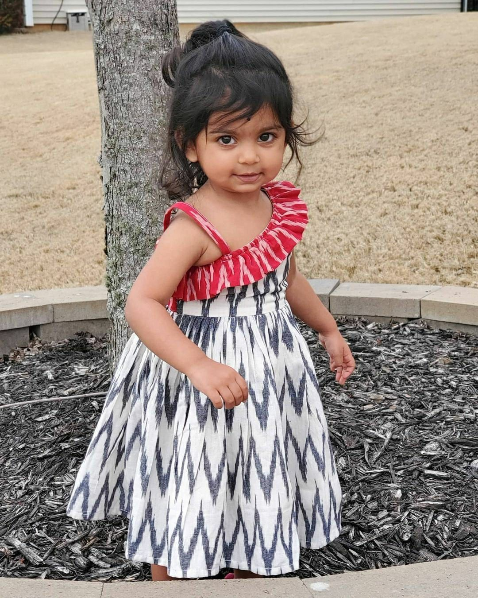

High Fashion
Today, Indian fashion is shaped
on the one hand by celebrity
influence and social media, and,
on the other, by fast fashion
happening elsewhere in the world.
Fast fashion and e-commerce
outlets have taken trendy clothes
to the masses; however, there is
a rebirth for sustainability and
eco-fashion amongst the younger
generation.
About Us
Leading the premium cotton shirting
fabrics and the high street fashion
printed fabrics, Morarjee Textiles
is the global rulers of the industry.
We at Morarjee boast a high profile
list of clientele that includes
domestic and international brands
across 44 countries. This list includes
brands like Uniqlo, Zara, Esprit, Next,
Paul Smith, M&S, H&M, ANF, Belk, Moss
Brothers to name a few. Some of the
farfetched domestic client brands
include names like Louis Philippe,
Van Huesen, Blackberry and Zodiac.

Collection

Female Fashion
Female dress collections currently
embrace a wide variety of styles,
from casual fit-and-flare to elegant
maxi gowns, catering to different
occasions, body types, and fashion
preferences.

Male Fashion
Men's dress collections encompass
a broad range of styles,
including casual, formal,
ethnic, and trendy fashion,
catering to various occasions
and preferences across
different fabrics, cuts, and
designs.

Kids Fashion
Kids dress collections offer a
diverse range of stylish, comfortable,
and occasion-appropriate clothing
designed to bring charm and ease to
children’s wardrobes, available in
casual, festive, and party styles
crafted from soft, breathable fabrics.